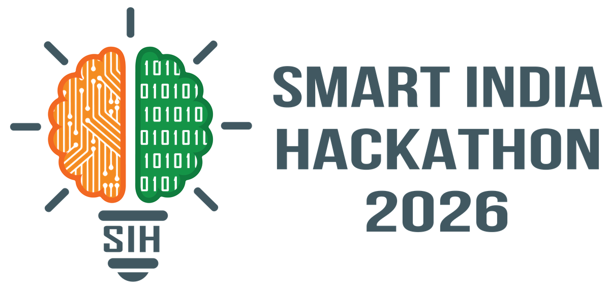

Single-Pass Drone Video to Accurate 3D Model Generation System
Theme
Robotics and Drones
PS Category
Software
Organisation
National Technical Research Organisation (NTRO)
Team ID
Team Name
sixth harmony
Idea Title
OnePass: measurement-grade 3D from a single drone flight

TEAM · sixth harmony
SIH 2026
PROPOSED SOLUTION (DESCRIBE YOUR IDEA/SOLUTION/PROTOTYPE)
OnePass
Measurement-grade 3D from a single drone flight
In plain terms: fly a drone over an area once, and OnePass turns that one video into an
accurate, map-ready 3D model. No return trips, no markers placed on the ground first.
WHAT IT DOES
Builds a 3D model of terrain, buildings, roads and vegetation from one ordinary flight video
Produces three tiers from that one flight: a fast rough preview, a realistic 3D scene, and a survey-accurate model
Places the model at its real-world coordinates using the drone's own GPS and altitude sensor
WHY THIS MATTERS
Standard drone mapping needs several overlapping flights and physical ground markers placed beforehand (ref. 10)
In a disaster zone or restricted area, teams usually get one flight and no time to place markers
BUILT SO FAR TIER 1 RUNNING — photos or video + telemetry → GPS-aligned coloured
point cloud in ~30 s, fully offline, with per-point confidence and a browser viewer.
Tiers 2–3 and measurement tools are not built. Details on slide 3.
A single pass cannot observe every surface. We separate measured geometry
from inferred geometry and let the operator see which is which.
2@SIH Idea submission- Template
TEAM · sixth harmony
SIH 2026
TECHNICAL APPROACH
Methodology and process for implementation (Flow Charts/Images/working prototype)
NEURAL TRACK — IMPLEMENTED, RUNS END TO END BUILT
Parameters as implemented: DJI SRT matched by timestamp, ≤ 0.5 s gap, no interpolation · blur reject below 25% of the set's median
Laplacian variance · map-anything-apache @ 00f9c245, bf16, GPU capped at 48% · refusal threshold s₂/s₁ < 0.1 · binary PLY carrying
per-point cross-view agreement, confidence and view id. Modules: selection.py · infer.py · georef.py · fuse.py · server.py.
MEASURED — A100 80GB, 18 aerial photos: 1,134,767 points in 29.8 s
(18.7 s model load, 5.9 s reconstruct), 11.1 GB peak GPU. Agreement with the photos' own GPS 1.43 m RMSE.
Offline run verified in a network-less namespace.
PLANNED — NOT IMPLEMENTED
Parallax-aware keyframe selection (current selector is interval-based)
Same frames through the COLMAP track; report inter-method agreement
Working prototype — a stored run: video + SRT, 18 frames, 1,025,708 points.
Live at bhuvan171.github.io/onepass-neural (ref. 15).
Fully offline and on-premise — no cloud, no external API. Apache-2.0 MapAnything weights; the CC-BY-NC checkpoint is never
downloaded. plyfile (GPL-3.0) and the system FFmpeg build are still under licence review.
3@SIH Idea submission- Template
TEAM · sixth harmony
SIH 2026
FEASIBILITY AND VIABILITY
Analysis of the feasibility of the idea
PUBLISHED RESEARCH VS. WHAT WE HAVE MEASURED
What we're measuring, in plain terms
Published research finding (ref. 1)
OnePass: measured so far
How much of the map has no holes, with only a few, barely-overlapping photos of the area
Newer AI methods leave fewer blank patches than the older standard method
Not yet tested. To be confirmed by running the same test on our own system
How far the model's position can be off from the real spot on the ground
Not tested in the cited study: it didn't use GPS
The aligned cloud agrees with the photos' own GPS to about 1.4 m. That is agreement with input GPS, not ground accuracy, which is not yet measured
1. Wu, Landgraf, Ulrich & Qin (2025), UseGeo benchmark, full citation on slide 6.
EVALUATION CRITERIA
Metric
Proves
Single strip vs full grid, same site
The core question
Position error vs known ground points
Real-world accuracy
Size error over known distances
Correct real-world scale
Surface match vs laser scan
Shape accuracy
Coverage, counting only reliable areas
Honest coverage
RISKS AND MITIGATIONS
Risk
Mitigation
Sideways shape is less certain with only one flight path
GPS-constrained alignment; refuses tracks that cannot fix rotation BUILT Adaptive keyframes PLANNED
Moving vehicles and people
Segmentation and motion masking PLANNED
Unseen / occluded surfaces
Per-point confidence shown, low-agreement points can be hidden BUILT
4@SIH Idea submission- Template
TEAM · sixth harmony
SIH 2026
IMPACT AND BENEFITS
Potential impact on the target audience · Benefits of the solution (social, economic, environmental, etc.)
The bottleneck: time
TraditionalSeveral overlapping flights, ground markers placed beforehand, and processing back at base.
With OnePassOne flight, no markers, and processing on a laptop at the point of capture.
Measured on the prototype: 18 aerial photos became a 1.13 million-point coloured cloud in 29.8 s on one GPU.
This is a photo set, not a full-length flight video, so it says nothing yet about long flights.
OPERATIONAL
Removes the ground-marker survey step (ref. 13)
Runs on a laptop, offline, at the point of capture
SECTORS
Disaster and flood response, where teams often get one flight (ref. 12)
Border mapping, infrastructure, archaeology
ECONOMIC
No survey crew or RTK-GPS equipment needed on site (ref. 13)
No repeat flights, no per-seat licence
ENVIRONMENTAL & SOCIAL
Fewer flight hours per survey
Faster response than traditional mapping (ref. 11)
11. Overwatch Mapping (2026), drone disaster-response reporting. 12. CRASAR, Texas A&M, Hurricane Harvey UAV deployment (DroneLife, 2025).
13. Industry cost estimates for RTK ground-control survey crews and equipment. Full citations on slide 6.
5@SIH Idea submission- Template
TEAM · sixth harmony
SIH 2026
RESEARCH AND REFERENCES
Details / Links of the reference and research work
Wu, Landgraf, Ulrich & Qin (2025). An Evaluation of DUSt3R/MASt3R/VGGT 3D Reconstruction on Photogrammetric Aerial Blocks. arXiv:2507.14798